DodoGene生信DIY分析系统使用说明
系统简介
Dodogene生信DIY分析系统是集“流程工具自定义”，“流程工具使用”，“任务管理”以及“数据传输”等功能于一体的生物信息分析系统。主要功能是将我们的流程代码快速的可视化，从此做分析无需编程，只需点点鼠标就可以完成分析任务。
这套系统即可部署于本地服务器成为实验室的专属私有云，也可以部署在阿里云、腾讯云等公有云平台。简洁友好的界面与傻瓜化的操作方式能够让普通用户轻松驾驭这套系统并且无障碍地进行数据分析。生信工程师更可以随心所欲地创建自己的可视化分析流程，与生物学研究人员一起分享DIY带来的便利。
科研用户（非生信背景）：不用学编程，打开简洁易用的分析界面就能分析数据，分分钟拿到自己想要的分析结果，so easy！
生信工程师：可轻松定义自己的可视化分析流程，让不会编程的科研人员也可以使用，是不是很棒！
企业用户：基于DodoGene生信DIY分析系统，可视化自己的分析流程，为客户提供更优质快捷的服务，节约成本，节约时间！
安装部署
拓美科为用户提供远程安装调试
硬件建议：硬盘 > 500G，内存 > 32G，CPU > 8核心
系统建议：CentOS 6.x系列 (推荐6.8或6.9)
网络建议：无特殊要求
注册及登录
本系统采用注册登录的使用方式，可多人同时登录使用。注册成功后，需要系统管理员审核通过才能解锁全部功能

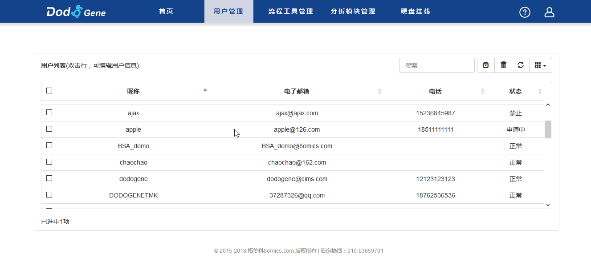
使用流程
在“数据分析”页面中选择自己想要的分析流程， 点击“立即使用”进入参数填写页面。在参数填写页面依次填写流程相关参数，并提交任务。
注：如有锁定模块或锁定样本等选项，需在确认“模块”或“样本”后点击“锁定”。
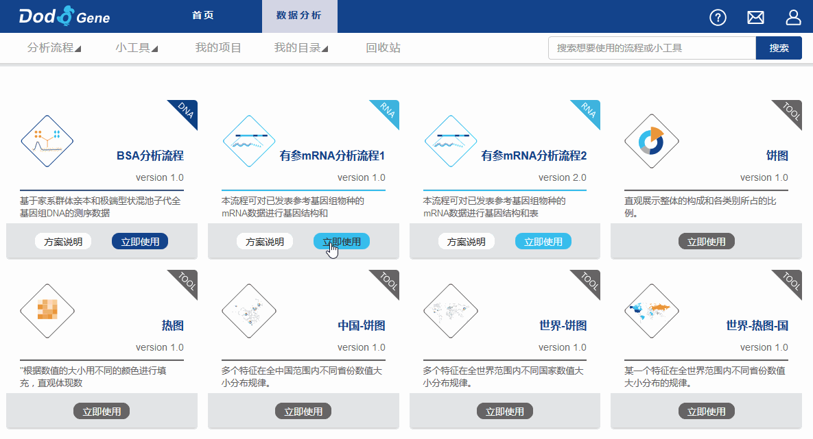
查看任务
“我的项目”页面展示出当前用户所有项目信息，包括该项目下任务的运行状态信息。进入具体项目页面，会展示出所有该项目下的任务信息。通过点击具体的任务名称可以查看该任务的运行状态，以及任务参数信息。
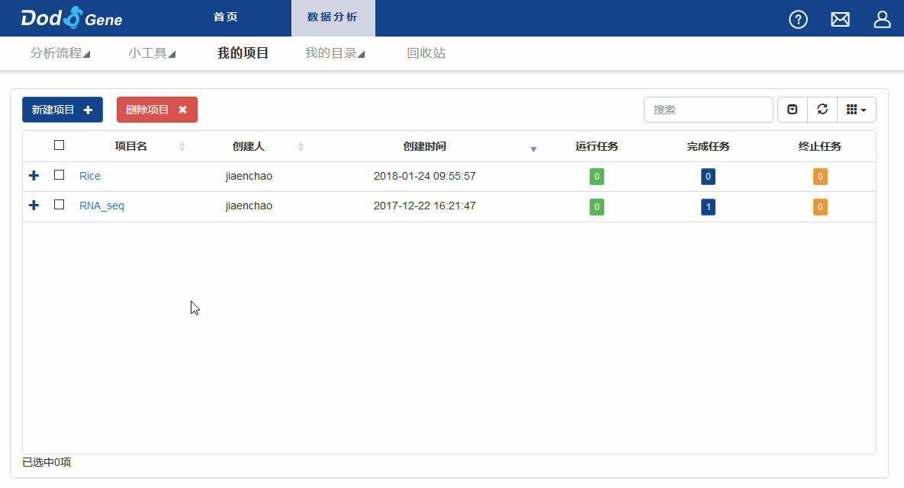
正在运行的任务可以进行终止和删除操作。
完成的任务可通过“查看报告”按钮查看分析结果。
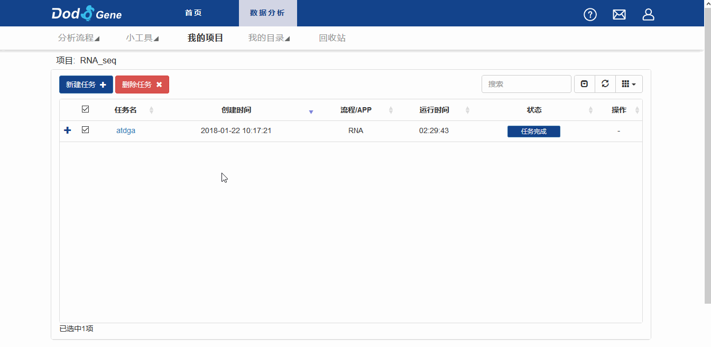
传输数据
1.小文件的数据查看和传输
“我的目录” 》“我的文件” ，页面为模拟windows风格的数据传输界面。“复制粘贴”，“更改文件名”，以及“小文件上传下载”等操作均可在该页面下完成
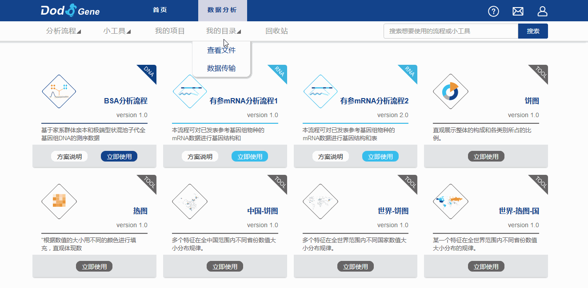
2.中等文件的数据查看和传输
“我的目录” 》“数据传输” ，页面为数据查看和传输的FTP页面，在该界面可进行中等大小文件的数据传输
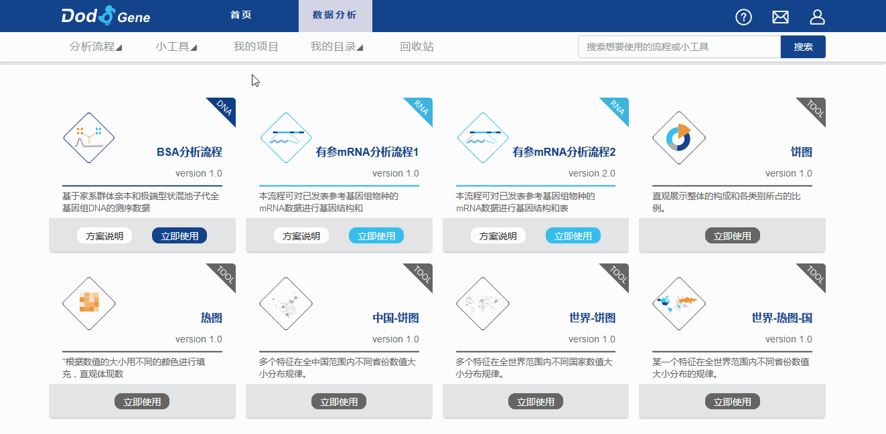
3.超大文件的数据传输
为了节约用户时间，超大文件可通过硬盘与服务器进行基于USB连接的高速传输。
1、硬盘与服务器通过USB连接后，在数据传输页面点击“挂载硬盘”，将硬盘目录挂载到服务器目录下，供用户使用
2、数据传输结束后，点击“卸载硬盘”，断开硬盘与服务器的连接
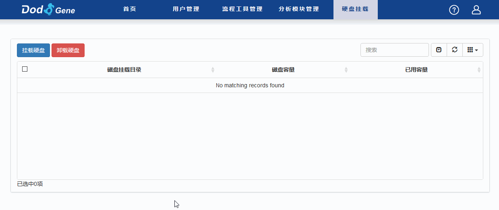
创建流程
为了实现简单高效地创建可视化流程，Dodogene生信DIY分析系统创造性地将可视化流程的构建与底层流程代码实现了有效分离。也就是说用户在浏览器上看到的流程模块以及参数填写页面其实是整体流程参数的收集器，它会将我们选择的模块以及对应的参数以字符串形式传递给主流程程序。主流程程序会用这些参数来进行任务分配作业。
参数示例如下所示：
python /project/home/Public/Ecoi_pipeline/snp_calling.py --param_val
'{"fa":"/project/Ecoi_data/genome.fa","qual":"20","depth":"1000000","taskDir":"/project/home/xiaoming163com/test","projectName":"Ecoi","taskName":"Ecoi_snp","taskID":"1E5459C9-974D-7291-3F50-3103476D5BFD","mod":["snp_calling","bwa_alignment"]}'
为了实现对运行任务的可视化监控，系统使用基于SGE调度系统的sjm程序对流程任务进行排序并投递运行。经sjm投递的任务，其状态会实时反馈给任务状态界面，用户可通过查看任务状态页面来获取流程整体运行状态。
sjm程序配置文件示例如下所示：
task_dir /project/home/xiaoming163com/test
job_begin
name bwa_job
anamod bwa_alignment
sched_options -q all.q -cwd -V
cmd python /project/home/Public/Ecoi_pipeline/bwa.py /project/Ecoi_data/genome.fa /project/home/xiaoming163com/test
job_end
job_begin
name snp_calling_job
anamod snp_calling
sched_options -q all.q -cwd -V
cmd python /project/home/Public/Ecoi_pipeline/snp.py 1000000 /project/home/xiaoming163com/test
job_end
job_begin
name filt_job
anamod snp_calling
sched_options -q all.q -cwd -V
cmd python /project/home/Public/Ecoi_pipeline/filter.py 20 /project/home/xiaoming163com/test
job_end
order snp_calling_job after bwa_job
order filt_job after snp_calling_job
我们以一个简单流程为例，来说明如何快速在系统界面上创建可视化流程。注：（具体使用的程序语言，解析参数以及编写流程的方式方法因人而异，大家可以尽情发挥，只需最后将任务经sjm提交即可）
现在，我们要对一个大肠杆菌的基因组重测序数据进行snp变异检测分析。首先，用Python语言编写了三个分析脚本。其中alignment.py脚本用来进行序列比对分析，snp_calling.py脚本会基于alignment.py脚本生成的bam结果进行snp变异检测分析，最后通过filter.py脚本再对snp结果进行深度过滤。
| 脚本名称 | 输入参数 | 功能 |
| alignment.py | 1）参考基因组fa文件；2）结果输出目录 | 用bwa软件进行与参考基因组的比对分析 |
| snp_calling.py | 1）SNP深度值；2）结果输出目录 | 对比对生成的bam文件进行snp检测分析 |
| filter.py | 1）SNP质量值；2）结果输出目录 | 对检测出来的snp数据进行snp质量过滤 |
接下来我们将这个小流程分成了两个功能模块，一个是“序列比对_alignment”，另一个是“变异检测_snp_calling”。
| 模块分类 | 模块对应的功能脚本 | 模块包含的参数 |
| 序列比对_alignment | alignment.py | 1）参考基因组fa文件； |
| 变异检测_snp_calling | snp_calling.py | 1）SNP质量值；2）SNP深度值 |
| filter.py |
下面，我们在系统上创建两个与之对应的分析模块，选项中的“模块标识”需与sjm配置文件中的anamod名称对应。
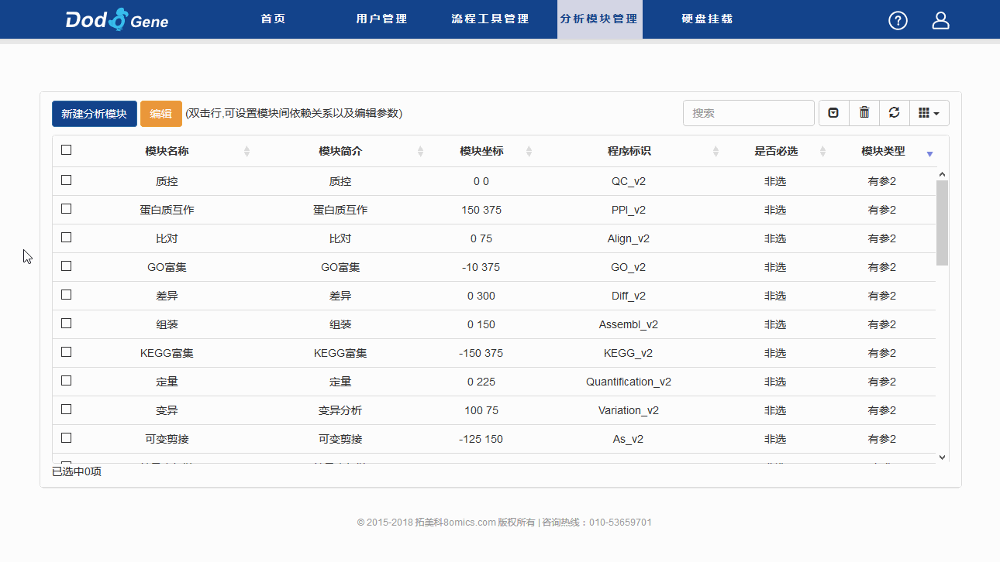
通过选择依赖模块来设置模块的依赖关系，也就是模块的先后顺序，当前模块要在依赖模块运行完成之后才会开始运行
创建模块的参数，系统提供了多个参数类型，包括下拉框，input框等，用户可根据需要进行选择
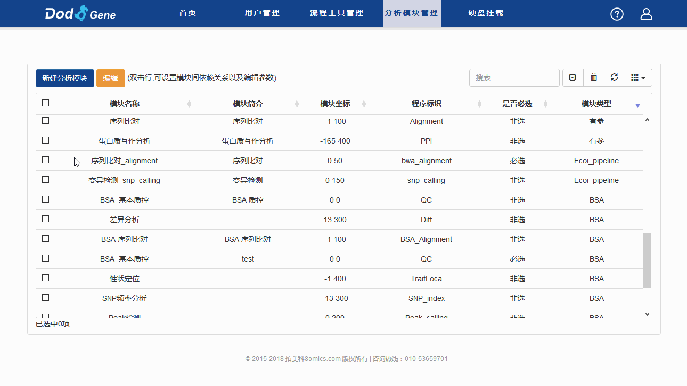
模块创建好后，我们需要根据模块间的依赖关系，将模块连接起来，也就完成了这个分析流程的创建过程
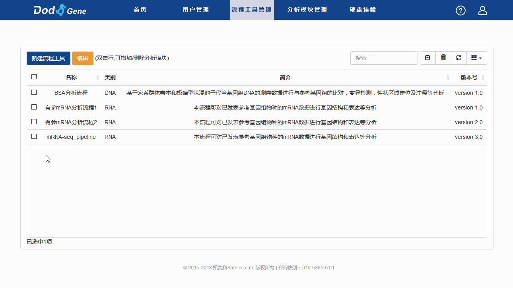
为了让这个流程能够在服务器上运行，并且能够监控到它的运行状态，我们最后只需要写一个简单的主流程脚本(本示例中的主流程脚本为snp_calling.py)，将可视化流程传递的参数分配给每一个模块下要运行的功能脚本，并生成一个sjm配置文件，最后用sjm提交这个配置文件即可
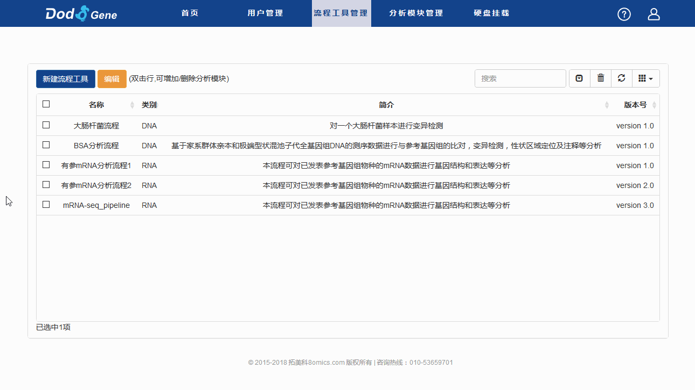
snp_calling.py：
#!/bin/env python
# -*- coding: UTF-8 -*-
import argparse
import json
import os
#-------------------------------------------------------------------------------------------------
# sjm配置文件---投递任务模版函数
def mk_sjm_parts(jobname, modulename, cmd, opts=''):
formats = '''job_begin #任务开始
\tname {jobname} #SGE提交的job名称（自定义），在任务状态页面显示
\tanamod {modulename} #模块名称，此模块名称为模块标识名称
\tsched_options -q all.q -cwd -V {opts} #设置SGE投递队列
\tcmd {cmd} #执行程序及参数
job_end\n\n'''.format(jobname=jobname, modulename=modulename,opts=opts, cmd=cmd)
return formats
# sjm配置文件---设置任务顺序模版函数
def write_job_order(job_before, job_after):
return "order %s after %s\n" % (job_after, job_before)
#-------------------------------------------------------------------------------------------------
# 解析主流程参数
parser = argparse.ArgumentParser()
parser.add_argument('--param_val', type=json.loads, required=True)
args = parser.parse_args()
outdir = args.param_val['taskDir'] # 任务目录路径
fa = args.param_val['fa'] # 参考序列文件路径
qual = args.param_val['qual'] # snp质量值
depth = args.param_val['depth'] # snp深度
#------------------------------------------------------------------------------------------------
#功能脚本路径
bwa = '/project/home/Public/Ecoi_pipeline/bwa.py'
snp = '/project/home/Public/Ecoi_pipeline/snp.py'
filt = '/project/home/Public/Ecoi_pipeline/filter.py'
#------------------------------------------------------------------------------------------------
#根据用户选择的模块以及对应的参数生成sjm配置文件
cmds = ''
orders = ''
if 'bwa_alignment' in args.param_val['mod']:
cmd = 'python {bwa} {fa} {outdir}'.format(
bwa=bwa,
fa=fa,
outdir=outdir)
bwa_cmd = mk_sjm_parts('bwa_job', 'bwa_alignment', cmd)
cmds += bwa_cmd
if 'snp_calling' in args.param_val['mod']:
cmd = 'python {snp} {depth} {outdir}'.format(
snp=snp,
depth=depth,
outdir=outdir)
snp_cmd = mk_sjm_parts('snp_calling_job', 'snp_calling', cmd)
cmds += snp_cmd
orders += write_job_order('bwa_job', 'snp_calling_job')
cmd = 'python {filt} {qual} {outdir}'.format(
filt=filt,
qual=qual,
outdir=outdir)
filt_cmd = mk_sjm_parts('filt_job', 'snp_calling', cmd)
cmds += filt_cmd
orders += write_job_order('snp_calling_job', 'filt_job')
Ecoi_sjm_file = os.path.join(outdir, 'Ecoi_pipeline.sjm')
Ecoi_sjm = open(Ecoi_sjm_file, 'w')
Ecoi_sjm.write('task_dir ' + outdir + '\n\n')
Ecoi_sjm.write(cmds)
Ecoi_sjm.write(orders)
Ecoi_sjm.close()
#------------------------------------------------------------------------------------------------
#用sjm投递流程任务
taskID = args.param_val['taskID'] #每个流程任务的taskID识别号
os.system('sjm -x {taskID} {Ecoi_sjm_file}'.format(**vars()))
下面我们来使用下这个新建的“大肠杆菌流程”可视化流程
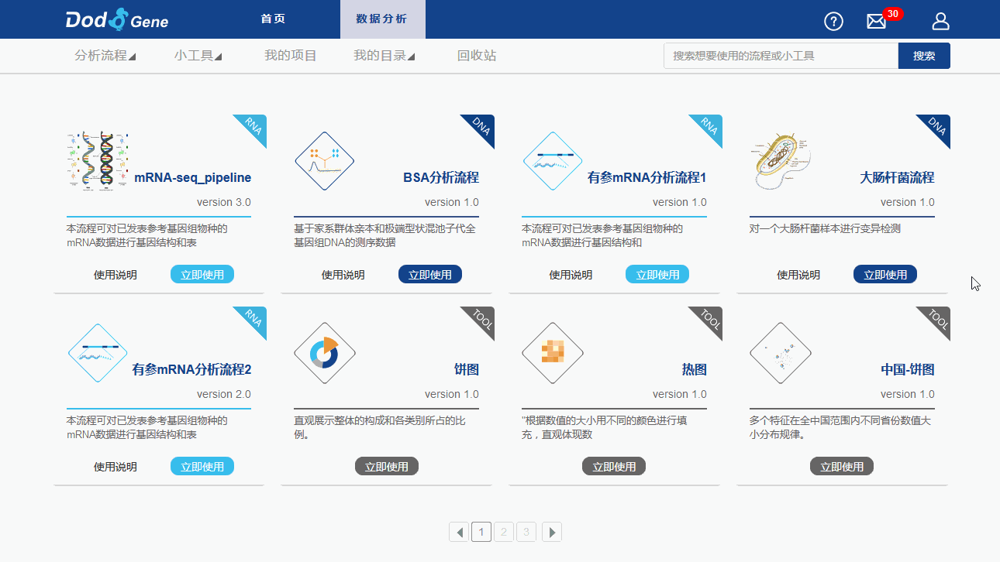
本次任务传递给主流程脚本snp_calling.py的参数为：
python /project/home/Public/Ecoi_pipeline/snp_calling.py --param_val
'{"fa":"/project/home/xyfhschf1499669196/Ecoi_O157GCF_000008865.1_ASM886v1_genomic.fa","qual":"20","depth":"1000000","taskDir":"/project/home/xyfhschf1499669196/Ecoi_testdir","projectName":"Ecoi","taskName":"Ecoi_test","taskID":"93CCC8EB-BB9D-0A14-3932-8BEE016B43F0","mod":["snp_calling","bwa_alignment"]}'
本次任务主流程脚本snp_calling.py生成的sjm配置文件为：
task_dir /project/home/xyfhschf1499669196/Ecoi_testdir
job_begin
name bwa_job
anamod bwa_alignment
sched_options -q all.q -cwd -V
cmd python /project/home/Public/Ecoi_pipeline/bwa.py /project/home/xyfhschf1499669196/Ecoi_O157GCF_000008865.1_ASM886v1_genomic.fa /project/home/xyfhschf1499669196/Ecoi_testdir
job_end
job_begin
name snp_calling_job
anamod snp_calling
sched_options -q all.q -cwd -V
cmd python /project/home/Public/Ecoi_pipeline/snp.py 1000000 /project/home/xyfhschf1499669196/Ecoi_testdir
job_end
job_begin
name filt_job
anamod snp_calling
sched_options -q all.q -cwd -V
cmd python /project/home/Public/Ecoi_pipeline/filter.py 20 /project/home/xyfhschf1499669196/Ecoi_testdir
job_end
order snp_calling_job after bwa_job
order filt_job after snp_calling_job
用户管理
管理员可通过用户管理页面进行用户的“权限修改”，“密码修改”，“删除”等操作。
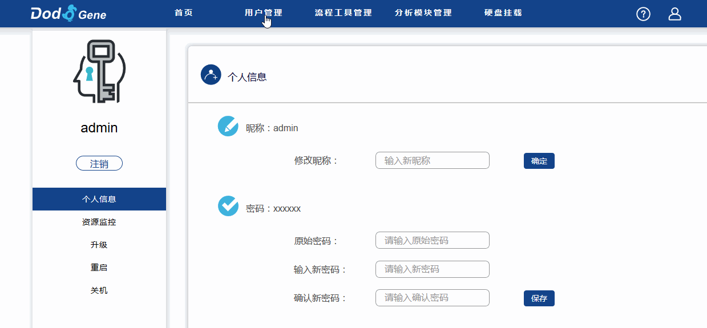
系统管理
管理员可通过管理界面进行服务器的“重启”和“关机”等操作。
我的资源页面展现的是服务器的CPU，内存，存储以及任务作业实时信息。
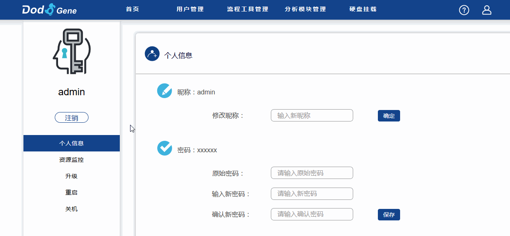